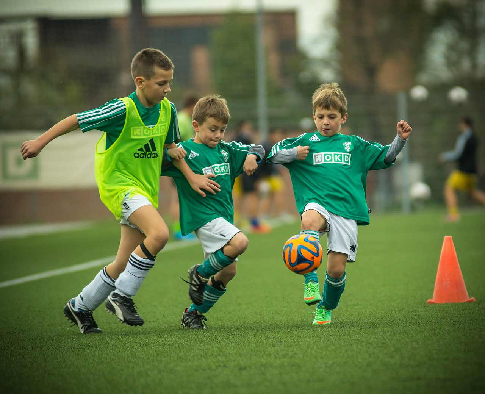

为什么喜欢足球？
下面，我就来说说人们喜欢踢足球的原因？
足球运动有如此大的魅力，不仅在于足球运动孕育着丰富的内涵，而且也与足球运动的特点有关。 一、整体性。足球比赛每队由11人上场参赛。场上的11人思想统一，行动要一致，攻则全动，守则全防，整体参战的意识要强。只有形成整体的攻守，才能取得比赛的主动权及良好的比赛结果。 二、对抗性。足球运动是一项竞争激烈的对抗性项目，比赛中双方为争夺控制权，达到将球攻进对方球门，而又不让球进入本方球门的目的，展开短兵相接的争斗，尤其是在两个罚球区附近时间、空间的争夺更是异常凶猛，扣人心弦。一场高水平的比赛，双方因争夺和冲撞倒地次数多达200次以上，可见对抗之激烈。 三、多变性。足球运动是一项技术上多彩多姿、战术上变幻莫测、胜负结局难以预测的非周期性运动项目，比赛中运用技、战术时要受对方直接的干扰、限制和抵抗。技、战术是依临场中具体情况而灵活机动地加以运用和发挥。 四、易行性。足球竞赛规则比较简练，器材设备要求也不高。一般性足球比赛的时间、参赛人数、场地和器材也不受严格限制，因而是全民健身中一项十分易于开展的群众性的体育运动项目。
比赛！！！
2019年世界杯
2019年国际篮联篮球世界杯（英语：2019 FIBA Basketball World Cup）暨第18届国际篮联篮球世界杯（世界男子篮球锦标赛更名为篮球世界杯后的第二届世界杯），将于2019年8月31日至
2020年中国足协杯
2020年中国足协杯是中国足协举行的第28届中国足协杯，本届足协杯经综合疫情防控、竞赛组织等各方面因素考虑，仅2020中超参赛球队（16支）和2020中甲参赛球队（8支）共计24支队伍参加。本届杯赛
足球新闻
6 / 12
6月12日，迟到的欧洲杯终于来了
6月12日凌晨3时，意大利罗马奥林匹克体育场，“2020欧洲杯”揭幕战将在这里进行，一场关于足球的盛宴就此拉开帷幕。
6 / 1
阿坤终于来了，等的好辛苦！
5月31日消息，巴塞罗那官方宣布签下阿根廷前锋阿圭罗，双方签约至2022-23赛季结束，违约金为1亿欧元。
5 / 09
足球重点赛事
上赛季遗憾错失冠军本季阵容又有补强，蔚山现代新赛季将全力冲击冠军；球队人员变动大本赛季已提前锁定降级名额，尚州尚武将如何表现值得期待。
凤栖梧·又到阜新兼怀故诗友
- 凤栖梧·又到阜新兼怀故诗友。
- 为有诗风吹市韵，击掌倾樽，高宇留芳信。
- 最是春花开未尽，待君簪上苍苍鬓。
- 弹指十年真一瞬。约也无言,
- 约也无言，有忆无从问。
- 云影依然无远近，还牵明月来相认。